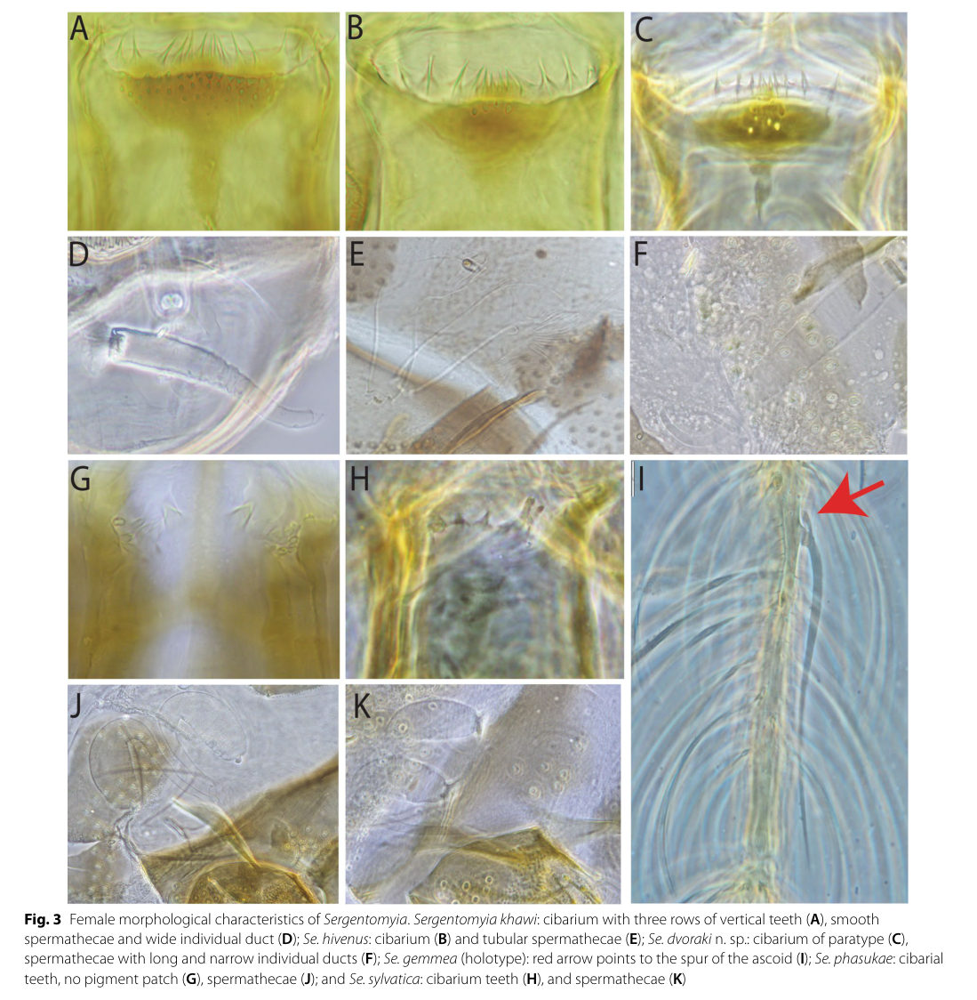

Species › Sergentomyia › ungrouped
Sergentomyia phasukae
| Classification | Genus Sergentomyia, ungrouped |
|---|---|
| Status | valid |
| Distribution | Thailand (Galati et al. 2025, p. 36; listed among Sergentomyia incertae sedis, Thailand underlined as type-locality country) | Thailand (described from Khao Yai National Park, Curler 2011); Laos (Vongphayloth et al. 2024) | Laos: Luangnamtha, Luangphabang, Vientiane province (11 females; karstic areas) (Vongphayloth et al. 2026, Table 2) |
| Thailand | Thailand (Galati et al. 2025) | Khao Yai National Park (Curler 2011, as cited in Vongphayloth et al. 2024) |
| Diagnostic notes | Not in any key in this collection; listed for Thailand by Galati et al. 2025 | Close to Se. quatei. No pigment patch (sclerotized area) on the cibarium; common spermathecal duct long (Vongphayloth et al. 2024). | Closely related to S. quatei; the two are separated only by the length of the common spermathecal duct, so misidentification is possible depending on slide mounting (Vongphayloth et al. 2026). |
| Sources | Galati et al. 2025, Vongphayloth et al. 2024, Vongphayloth et al. 2026 |
How it keys out
The chain of characters leading to this taxon in each key (a ready-made diagnosis).
Laos karst (Vientiane): females (Vongphayloth et al. 2024) – couplet 9a
Figures

